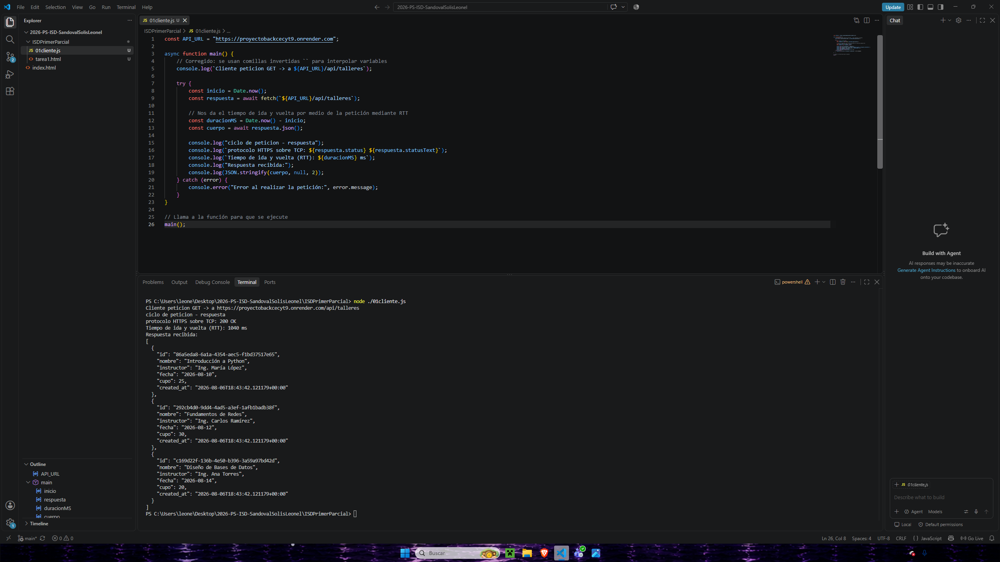

Se creo una funcion asincrona que detecta el tiempo de latencia entre la api talleres y el usuario a travez de la peticion get
Si se conecto, ya que hubo un tiempo entre que se mando la peticion y fue respondida
Los elemeontos que se obtubieron fueron el Id de la tabla, nombre, en el formato tradicional de un json que es nombre y seguido a la variable